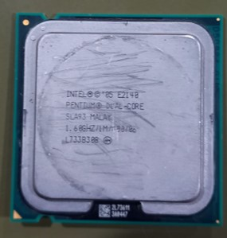

Intel Xeon 3.2 GHz:
Socket: 604 (también conocido como mPGA604)
Arquitectura: NetBurst (similar a los Pentium 4)
Proceso de fabricación: 90 nm o 65 nm
Núcleos: 1 núcleo o hasta 2 núcleos en versiones más recientes
Frecuencias: Entre 2.8 GHz y 3.8 GHz
Memoria caché: L2 de 1 MB a 2 MB
Bus Frontal (FSB): 533 MHz o 800 MHz
TDP (Consumo): Aproximadamente 100W a 150W
Uso común: Servidores y estaciones de trabajo
Intel Pentium E2140:
Arquitectura: Conroe (Core 2 Duo basado en 65nm)
Núcleos / Hilos: 2 núcleos / 2 hilos
Frecuencia base: 1.6 GHz
Caché L2:1 MB
Socket: LGA 775
TDP: 65W
Instrucciones: 64-bit
Año de lanzamiento: 2007
Tecnología de fabricación: 65nm
Intel Pentium III 999EB:
Marca: Intel
Modelo: Pentium III
Código de especificación: 999EB
Microarquitectura: P6 (basada en la arquitectura x86)
Número de núcleos: 1
Frecuencia de reloj: 450 MHz
Caché L2: 256 KB (integrado)
Caché L1: 32 KB (16 KB por cada núcleo)
Front Side Bus (FSB): 133 MHz
Voltaje: 1.7V
Tecnología de fabricación: 250 nm
Consumo de energía (TDP): Aproximadamente 25W
Intel Pentium 4 531 (SL9CB):
Arquitectura: Prescott
Frecuencia: 3.0 GHz
Caché L2: 1 MB
FSB: 800 MHz
Socket: LGA 775
Tecnología: 90 nm
Instrucciones: SSE, SSE2, SSE3
TDP: 84W
Voltaje: 0.85V - 1.4V
Origen: Malasia
Intel Celeron D 336 (SL98W)
Modelo: Celeron D 336
Código SSpec: SL98W
Arquitectura: Prescott (NetBurst)
Frecuencia: 2.88 GHz
Caché L2: 256 KB
FSB: 533 MHz
Socket: LGA 775
Tecnología: 90 nm
Voltaje: 1.25V
TDP: 84W
Instrucciones: MMX, SSE, SSE2, SSE3
Origen: Filipinas